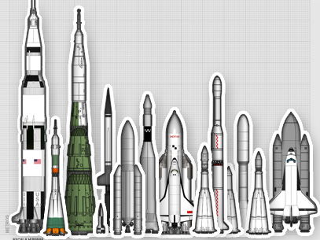
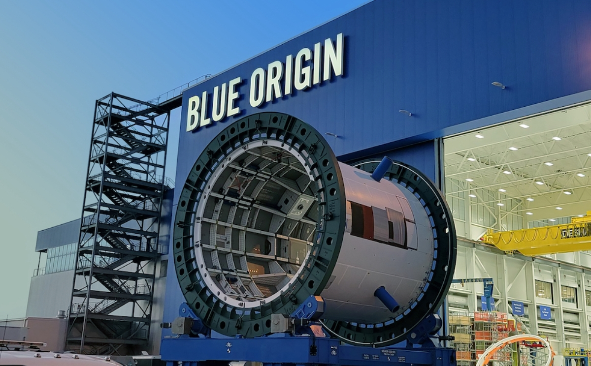
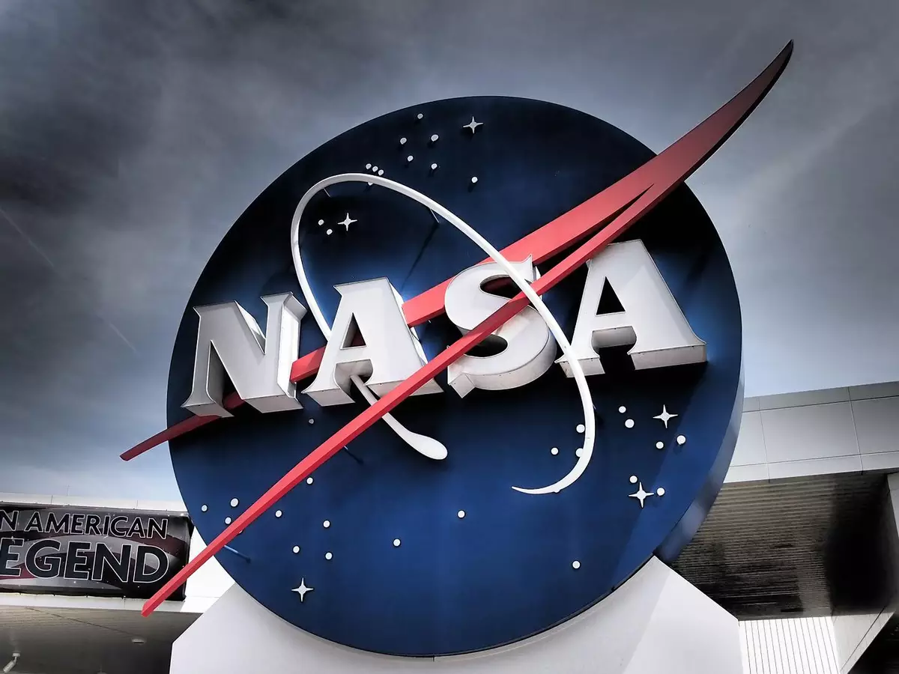
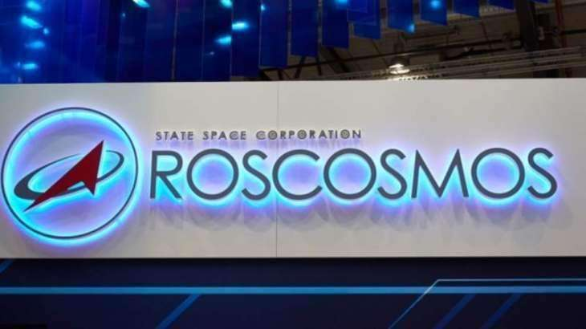

Who are we?
We are DKCGI Rocket, a student group from ETEC Profª Maria Cristina Medeiros. We're working on a school project for the APW (Web Project Analysis) subject, where we'll study and work on understanding how rockets function. Our goals are to build a functional rocket project, gain visibility in aerospace-related projects, and share the project's steps and the knowledge we acquire along the way.
Members
Carolina Marzinoti Libarino
My name is Carolina Marzinoti Libarino. I'm 15 years old and I'm in the first year of the computer science course at ETEC Maria Cristina Medeiros. My favorite subject in the course is programming, and I plan to pursue a career in this field. The DKCGI ROCKET project is challenging but I'm enjoying our results.
Davi Antônio Ramos Araujo

I'm Davi Antônio Ramos Araujo, born in Ribeirão Pires - SP. Since childhood, my curiosity for technology has flourished, driving me to explore the field on my own after taking a computer course. My thirst for knowledge led me to enroll at ETEC MCM, where, despite the challenging teaching method, I'm enjoying the experience. My goal is to follow in my father's footsteps and become a mechanical engineer, inspired by his career. Although the next steps aren't clear yet, I'm committed to absorbing as much as I can to grow and thrive in the technology and engineering industry. My journey is just beginning, and I'm excited to see where it will take me.
Enzo Krebs Silva
Hello, I'm Enzo Krebs Silva, a 15-year-old from Ribeirão Pires, São Paulo. Since I was young, I've been captivated by the world of technology, revealing an insatiable curiosity for its secrets. I grew up disassembling and reassembling old hardware, uncovering their gears and imagining possibilities beyond the obvious. This passion drove me to explore various applications and tools, diving deep into their intricacies and challenging their functionalities. My connection with the field of information technology flourished when I took the entrance exam for ETEC Profª Maria Cristina Medeiros, where I embarked on the exciting IT course. My journey at ETEC has been an incredible learning adventure. Every line of code written, every problem solved, solidifies my desire to constantly improve. The experience has been enriching, and my commitment keeps growing. My goal is to apply my passion and effort to build a remarkable career in the field, seizing every opportunity to develop as a professional and an individual. I'm excited for the future challenges and achievements that lie ahead as I continue to pave my path at the forefront of technology.
Isabely D'Joliz
I'm Isabely D'joliz, I'm 15 years old, and I'm in high school with integrated technical education, studying IT at ETEC Maria Cristina Medeiros in Ribeirão Pires, where I was born and raised. I've always been very interested in technology in general, although I quite enjoy the IT field and the course, I'm still not sure if I want to pursue a career in this area. This project is helping me expand my areas of knowledge and challenge myself more and more.
Guilherme Augusto Pires da Silva
I'm Guilherme Augusto Pires da Silva, 15 years old. I live in Guapituba, Parque das Américas, and I'm in high school with integrated technical education, studying IT at ETEC Maria Cristina Medeiros in Ribeirão Pires. I intend to become a technician in the IT field and pursue a degree in computer engineering to delve deeper and achieve my goals and dreams.
Presentation Video in Portuguese
Presentation Video in English
Rocket History
Rockets have a history dating back to ancient China, but it was in the 20th century that they made significant advances.
The Cold War fueled the space race between the USA and the Soviet Union. In 1957, the Soviets launched the first artificial satellite, Sputnik 1, and in 1961, Yuri Gagarin became the first human to orbit Earth. The USA responded with the Apollo program, which took astronauts to the Moon in 1969.
If rocket launches are common and frequent today, it's because they are the result of applying principles that were envisioned for the first time over 2,000 years ago. While the concepts behind rocket operation are quite ancient, it was only about 70 years ago that these vehicles began to be used in applications focused on space exploration. But when were rockets invented, and how do they work?
These elements of Michael's story in GTA V contribute to an engaging narrative full of emotional conflicts as he faces the challenges of reconciling his criminal past with his pursuit of a better and more meaningful life.
Recognized Companies in the Aerospace Industry
SpaceX

SpaceX, founded by Elon Musk in 2002, is a renowned aerospace company headquartered in the United States. Known for its innovation and bold vision, SpaceX has revolutionized the space industry. Its main goal is to make space travel more accessible and sustainable through the development of reusable rockets like Falcon 9 and Falcon Heavy. Additionally, the company is working on technologies for future interplanetary missions, notably the Starship project designed to enable crewed trips to Mars. With achievements such as sending astronauts to the International Space Station and significantly reducing launch costs, SpaceX continues to shape the future of space exploration.
Blue Origin
Blue Origin, founded by Jeff Bezos in 2000, is an American aerospace company focused on commercial space exploration and the development of reusable technologies. Its main goal is to enable the access of people and cargo to space, aiming for sustainable lunar colonization and exploration of other celestial bodies. The company is known for developing the suborbital rocket New Shepard, designed to carry tourists and scientists on experimental suborbital flights. Additionally, Blue Origin is working on the orbital rocket New Glenn and advanced propulsion technologies. Its commitment to reusability and commercial space exploration positions it as a significant figure in the contemporary space exploration landscape.
NASA
NASA, the United States' National Aeronautics and Space Administration, is a government agency dedicated to space exploration, scientific research, and technological development. Founded in 1958, NASA has pioneered iconic space missions such as the Apollo Moon landing and has significantly contributed to scientific and technological advancements. The agency conducts research in a wide range of areas, including astronomy, astrophysics, planetary exploration, and climatology. Moreover, it coordinates crewed and uncrewed missions, like space probes sent to study planets, moons, and other celestial bodies. NASA plays a vital role in understanding the cosmos and expanding human knowledge of space.
ROSCOSMOS
ROSCOSMOS, also known as the Russian Federal Space Agency, is the governmental agency responsible for Russia's space program. Founded in 1992, ROSCOSMOS succeeded the former Soviet space agency and remains a prominent figure in global space exploration. The agency is responsible for satellite launches, crewed missions to the International Space Station (ISS), and exploration of other celestial bodies. Notable achievements include pioneering the first human spaceflight with Yuri Gagarin and developing the iconic Soyuz spacecraft. Additionally, ROSCOSMOS is a vital partner in the ISS and plays a crucial role in international cooperation and ongoing space exploration.
Deep Dive
Purpose of Rockets
The purpose of a rocket is to provide a means of transportation for objects or living beings beyond Earth's atmosphere. Rockets use propulsion by burning fuel to generate an immense amount of thrust, allowing them to overcome gravity and achieve speeds sufficient to reach space.
Uses
1- Space Exploration: Rockets are launched into orbit and enable space exploration, data collection for advanced studies.
2- Communications: Communication satellites are launched by rockets and placed in orbit to provide telecommunications services.
3- Weather Observation and Forecasting: Meteorological satellites launched by rockets are used to monitor Earth's atmosphere, collect climate data, and provide more accurate weather forecasts.
4- Scientific Research: Rockets are also used to conduct scientific research in various fields.
5- Military Applications: In certain situations, rockets have military applications, such as launching reconnaissance satellites, ballistic missiles, and rockets for air defense. These applications are directed towards national security and defense purposes.
Subjects Studied for Project Development
1- Aerodynamics
2- Aerospace Design

3- Rocket Engineering

4- Propellants and Chemical Agents

- Manual do Fogueteiro (Rocketeer's Manual)
- Bounty Breaker
- AeroSpaceGyn
- TKOR
- And other miscellaneous materials